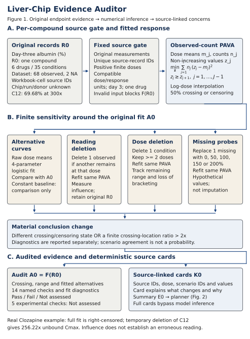
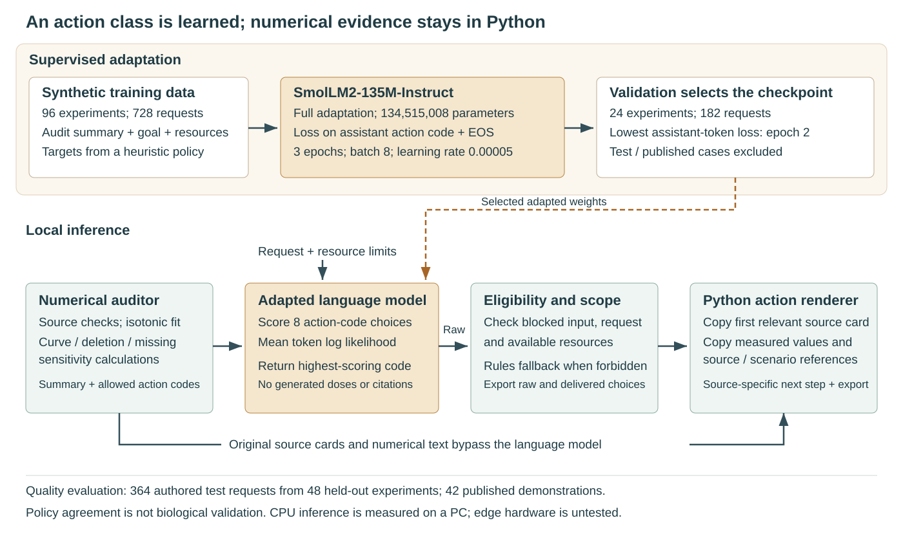

What the auditor has been tested on
The fitted models, computational comparison and limits of the measured results.
Endpoint and modelling assumptions
The primary model uses non-increasing isotonic regression, weighted by observed reading counts. Flat fitted blocks are allowed. It estimates the 50% normalised albumin-response crossing within the measured dose range, with interpolation in log dose. A finite crossing is withheld when the result is censored.
Raw interpolation and a bounded four-parameter logistic fit expose alternative curve assumptions. A constant training mean is an evaluation baseline. Temporary reading/dose deletion and explicitly hypothetical missing-value probes test finite sensitivity. Numerical fit diagnostics remain separate from conclusion-changing scenarios.
View the implemented framework

Held-dose prediction
All readings at one interior dose are withheld together. The 23 conditions are correlated within six compounds. Held responses enter scoring after fitting and warning computation.
| Model | MAE (percentage points) | RMSE (percentage points) | Scored conditions |
|---|
The small difference between isotonic regression and raw interpolation does not establish predictive superiority on new compounds or donors.
Compare reporting approaches
A shows the fitted curve alone. B adds the evidence checklist and sensitivity report. The legacy rule also triggers review for standalone logistic diagnostics. All approaches share identical predictions.
This is a paired computational comparison, not a randomised reader study or a laboratory treatment-control experiment.
| Cases | Report / rule | Detected | Missed | Warnings without a reference change | Cases with no warning |
|---|
Cases with no warning include missed reference changes when present. All original readings remain in the fits.
Evaluation boundaries
Real-data comparison is retrospective
The revised rule was motivated by the already inspected original results. The reference event is a conclusion changing after withheld evidence is restored; it is not biological ground truth.
Fresh simulation seed, existing generator
The revised rule was frozen before generating seed 20261004. The generator uses Hill and piecewise response families and eight scenarios. A fresh seed does not establish independent biological validation.
Experimental validity is not established
The public subset lacks documented experimental identities and raw controls. No donor-held-out validation or clinical safety assessment is performed. Finite scenario agreement is not a calibrated probability of correctness.
Earlier simulation results and engineering checks
The earlier development and evaluation seeds are retrospective for the revision. Six controlled metadata fixtures pass; these constructed cases are not a population-scale fault-detection estimate.
Experimental action planner
The locally adapted 135M language model selects a follow-up action class using the audit summary, researcher request and resources. Python supplies source-specific evidence and checks its choice. This benchmark is separate from response prediction and warning validation.
| Planner | Raw test policy agreement | After eligibility/scope guard |
|---|---|---|
| Fixed action order | 237/364 (65.1%) | Not evaluated |
| Request-aware rules | 364/364 (100%) | No correction needed |
| Untuned 135M model | 72/364 (19.8%) | 144/364 (39.6%) |
| Adapted 135M model | 337/364 (92.6%) | 361/364 (99.2%) |
The adapted model fails the predefined per-class gate: ABSTAIN is 24/48 and COMPARE is 0/2 before guards. All 76 protected test cases are delivered correctly; all rendered references are valid. Rules remain the default.
The 364 authored requests share 48 simulated experiments. Training labels come from our own heuristic policy, not scientists or biological outcomes. Published demonstrations match 41/42 labels. An advantage over rules has not been established.
Warm CPU model scoring on this PC: median 1.33 s, p95 2.29 s, four Torch threads. This excludes tokenisation, auditing and rendering. Named edge-device testing and quantisation remain pending.
See the implemented model workflow
